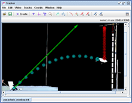

A collection of resources designed for Tracker workshops. The principal resource for each topic is a PDF file containing slides; supporting resources include videos, Tracker ZIP files and HTML pages.
